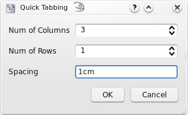
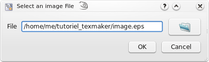
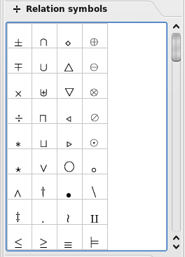
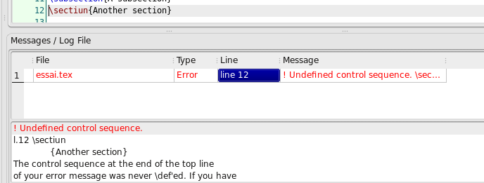
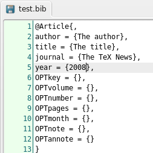
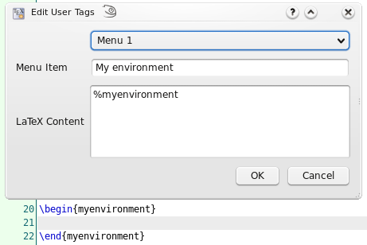

Texmaker comporte les commandes habituelles d'un éditeur classique : Copier, Coller...
Elles sont accessibles via le menu "Edition" et la première barre d'outils.
Il y a plusieurs façons de rédiger le préambule de son document LaTeX.
La première consiste à utiliser la commande "Démarrage rapide" du menu "Assistants" :

on peut y fixer les principales caractéristiques de son document (classe, format...). Les boutons "+" permettent de rajouter ses propres options. Tous ces réglages sont enregistrés : l'utilisateur les retrouvera à la prochaine utilisation de l'assistant.
On peut aussi utiliser un modèle de préambule que l'on a préalablement enregistré. Il suffit alors d'utiliser "Enregistrer sous" ou un "copier/coller" pour l'utiliser comme base de son nouveau document.
L'un des points forts de LaTeX est la structuration des documents. Pour définir une nouvelle "section" avec Texmaker, il suffit d'utiliser cette liste de la barre d'outils :

On n'a plus qu'à indiquer le titre voulu et si l'on désire que cette section soit numérotée (elle fera alors partie de la table des matières) :

Texmaker facilite la navigation dans un long document LaTeX grâce à la vue structure située à gauche de l'interface :

Un simple clic sur un item permet d'atteindre la ligne correspondante dans l'éditeur. Cette vue structure est actualisée à chaque enregistrement ou compilation du document. L'utilisateur peut aussi utiliser la commande "Rafraîchir Structure" du menu "Edition" à tout moment.
Pour chaque fichier, l'utilisateur peut définir trois "signets" pour accelérer la navigation dans un document. Pour ajouter ou supprimer un "signet", il suffit de cliquer sur un numéro de ligne. Quand vous avez déja défini trois signets, il faut en supprimer un pour pouvoir en ajouter un nouveau. Pour atteindre la ligne correspondante à un signet, il suffit de cliquer sur les boutons "1,2,3" dans la barre d'état de Texmaker.

Le formatage du texte peut se faire rapidement grâce à cette barre d'outils :
Une des caractéristiques de Texmaker est la possibilité de sélectionner le texte à formater avant de cliquer sur ces boutons. Les balises LaTeX adéquates entourent alors automatiquement le texte sélectionné.
Les commandes d'espacement usuelles sont disponibles dans le menu "LaTeX - Espacement". Le bouton "Retour à la ligne" (raccourci-clavier : Ctrl+Return) permet aussi d'insérer rapidement le code LaTeX pour un retour à la ligne.
Le menu "LaTeX - Listes" permet d'insérer rapidement le squelette des environnements listes traditionnels de LaTeX. Le raccourci-clavier pour insérer rapidement un item est : Ctrl+Alt+H.
Texmaker propose un assistant permettant d'insérer le code adéquat pour la plupart des tableaux standards. Il suffit d'utiliser la commande "Assistant tableau" du menu "Assistants". On se retrouve alors devant la boîte de dialogue ci-dessous.

On peut y définir les caractéristiques du tableau (nombre de lignes et de colonnes, alignement, séparateur...). Il est même possible d'entrer directement le texte de chaque cellule (on peut aussi les laisser vides et compléter la tableau alors dans l'éditeur). Le code LaTeX adéquat est alors automatiquement inséré.
L'"Assistant Tabulation" du menu "Assistants" permet d'insérer automatiquement le code LaTeX d'une tabulation simple grâce à la boîte de dialogue ci-dessous.

L'insertion d'une image se fait grâce à la commande "\includegraphics{}" du menu "LaTeX". En cliquant sur l'icône "fichier" de la boîte de dialogue ci-dessous, on peut alors sélectionner l'image à inclure.

Remarques :
La deuxième liste de la barre d'outils est à la disposition des utilisateurs pour insérer rapidement les commandes LaTeX usuelles pour les références croisées et les notes de bas de page. Les labels utilisés dans le document apparaissent dans la vue structure : un clic suffit à les atteindre dans l'éditeur.

Remarque : Pour la commande \ref , Texmaker propose de sélectionner un label parmi la liste de labels détectés dans le document (utiliser la commande "Rafraîchir Structure" du menu "Edition" pour actualiser éventuellement la liste).
Le passage en mode mathématique (en ligne) se fait avec le bouton "f(x)" de la barre d'outils "Math" ou grâce au raccourci-clavier Ctrl+Alt+M. Pour le mode hors-ligne, on peut utiliser la commande "$$...$$" du menu "Math" ou le raccourci-clavier Alt+Shift+M.
La barre d'outils mathématiques permet aussi d'insérer d'un seul clic les formes mathématiques les plus courantes (fraction, racine...) ainsi que les balises \left et \right.

Les panneaux de symboles mathématiques situés à gauche permettent d'insérer d'un clic le code LaTeX de près de 400 symboles.

Le menu "Math" permet aussi de définir le style du texte en mode mathématique (accents, styles de caractères,espacement)
Pour les matrices, un assistant basé sur le même principe que celui pour les tableaux est disponible dans le menu "Assistants". Il permet en plus de fixer l'environnement (array, matrix, pmatrix...). Les cellules peuvent être complétées directement dans l'assistant.

La première chose à faire avant de compiler son premier document avec Texmaker est de configurer les outils associés à LaTeX .
Pour cela, il faut utiliser la commande "Configurer Texmaker" dans le menu "Options" (menu "Texmaker - Préférences" sous macosx) et bien veiller à ce que les chemins vers les programmes associés à LaTeX soient corrects.
ATTENTION : sous windows, il faut utiliser / comme séparateur pour les répertoires (et pas \) et le chemin vers le programme doit être encadré par "" .
Exemple (commande Voir Dvi) : "C:/Program Files/TeXLive/bin/win32/windvi.exe" %.dvi

Le plus rapide pour compiler un document est d'utiliser la commande "Compilation rapide" (bouton "Quick" - raccourci-clavier : F1). Cette commande, dont le comportement est à fixer dans la boîte de dialogue de configuration de Texmaker permet d'enchaîner plusieurs commandes à la suite afin de passer directement du document LaTeX à la visualisation du fichier dvi, postscript ou pdf.
Sinon, on peut aussi lancer les commandes une par une selon ses besoins via le menu "Outils" (raccourcis-claviers : F2...F12).
Remarques :
Lors de l'utilisation de la commande "Compilation rapide", le fichier log généré par LaTeX est automatiquement affiché dans le panneau "Messages / Fichier Log" si une erreur de compilation est détectée. La ligne décrivant l'erreur apparaît alors en rouge. Un clic sur le numéro de ligne permet alors d'atteindre directement cette ligne dans l'éditeur.

Dans les autres cas, un simple clic sur les boutons "Erreur LaTeX suivante" et "Erreur LaTeX précédente" permet d'afficher le fichier log et d'atteindre directement l'erreur recherchée.
Texmaker permet aussi de travailler sur un document composé de plusieurs fichiers.
Pour inclure un fichier .tex dans son document, il suffit d'utiliser la commande "\include{file}" du menu "LaTeX". Une boîte de dialogue permet alors de sélectionner le fichier à inclure. Ce fichier apparaît alors à la fin de la vue "Structure". Un clic sur son nom permet de l'ouvrir automatiquement.
Il est conseillé alors de déclarer le document "racine" comme "document maître" à l'aide du menu "Options". Dès lors, toute compilation ne se fera plus à partir du document ouvert dans l'éditeur mais à partir du "document maître". On peut ainsi facilement travailler sur les documents "enfants" tout en compilant le document "racine" (qui peut même être fermé). Le menu "Options" permet aussi de retourner au mode "normal" (en désactivant la définition d'un document "maître").
Texmaker facilite la rédaction d'un fichier de bibliographie (au format standard .bib) grâce au menu "Bibliographie". Un clic sur un item de ce menu insère directement le code standard associé à ce style de bibliographie. Les commandes optionnelles signalées par "OPT" sont automatiquement effacées par la commande "Clean" du menu "Bibliographie" : il faut donc effacer le "OPT" pour les conserver.

Texmaker permet à l'utilisateur d'enregistrer dix extraits de code LaTeX accessibles par le menu "Utilisateur - Balises utilisateur" et par les raccourcis-claviers (Shift+F1 à Shift+F10). Pour définir ces extraits, il faut lancer la commande "Editer balises utilisateur" dans ce même menu.
Remarque : le fait d'entrer "%monenvironnement" dans le champ "code LaTeX" insérera le code suivant dans l'éditeur:
\begin{monenvironnement}
\end{monenvironnement}

Il est aussi possible de définir des commandes personnelles via le menu "Utilisateur - Commandes utilisateurs". Un % représente le nom du fichier à traiter sans extension. Les commandes, une fois définies, peuvent-être lancées par les raccourcis-claviers Alt+Shift+F1...Alt+Shift+F5 .
L'onglet "Commandes Metapost" permet d'insérer les commandes metapost dans un fichier .mp. La commande "Mpost" peut-être lancée à partir du menu "Outils".
L'option "Exporter vers Html" du menu "Outils" (disponible uniquement sur les versions unix et macosx) permet de transformer son document LaTeX en un site web où chaque page html est composée d'une seule image reproduisant exactement une des pages postscript du document. On évite ainsi les problèmes de mise en page entre le texte et les formules mathématiques des autres outils traditionnels de conversion LaTeX vers html.
Texmaker peut aussi créer automatiquement une page index dans le site web correspondant à la traditionnelle tables des matières du document LaTeX. Un clic sur un item de cette page index permet d'atteindre la page web correspondante.
Il est aussi possible d'insérer des liens externes et internes à l'intérieur des pages web en utilisant la commande \ttwplink{}{} dans le document .tex.
Synopsis de cette commande :
\ttwplink{http://www.monsite.com}{texte_lien} (lien externe)
\ttwplink{page3.html}{texte_lien} (lien interne)
\ttwplink{name_of_a_label}{texte_lien} (lien interne vers un label)
Attention : \ttwplink{}{} ne peut-être utilisé que pour exporter son document en html. Une compilation normale d'un document comportant cette commande par LaTeX déclenchera une erreur. Par ailleurs, cette commande est incompatible avec plusieurs "packages" LaTeX dont notamment \hyperref.